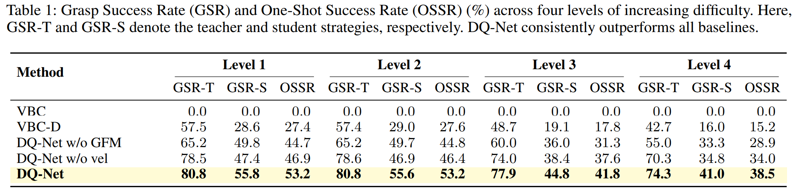
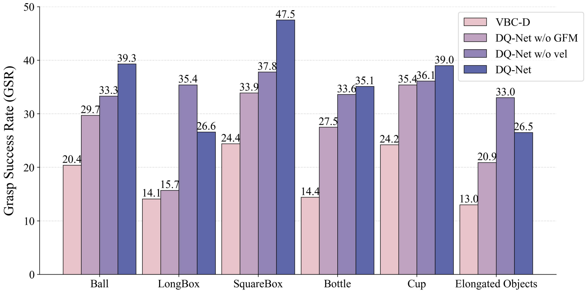
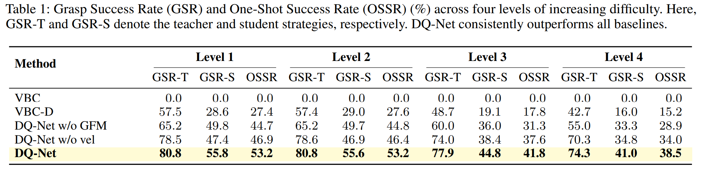
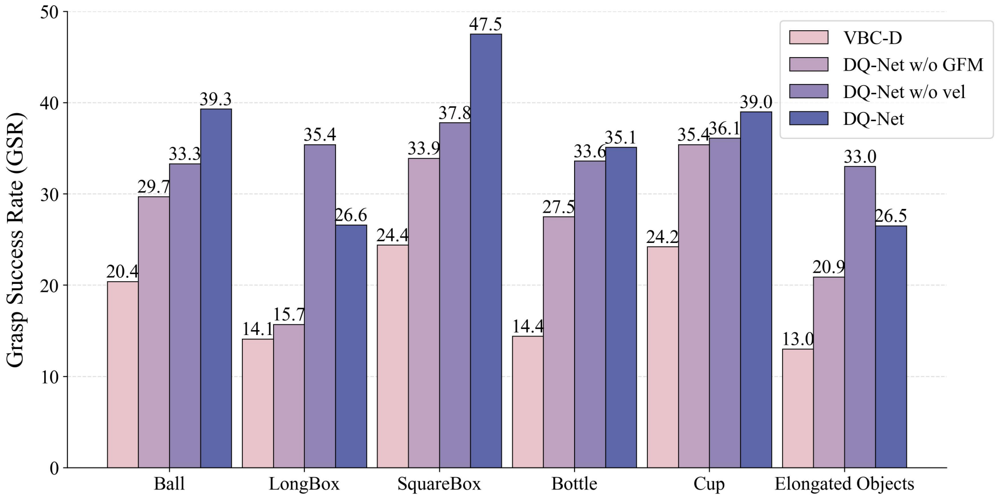

Results
DQ-Net achieves the highest grasp success rates across all difficulty levels and unseen object categories.
 
Hong Kong University of Science and Technology (Guangzhou), Shenzhen University, T-Stone Robotics Institute (CUHK), Shenzhen MSU-BIT University
We introduce DQ-Bench, the first benchmark for dynamic object grasping with quadruped robots, supporting realistic dynamics, diverse objects, multi-level task difficulty, and comprehensive evaluation. Building upon this benchmark, we propose DQ-Net, a teacher–student framework combining a Grasp Fusion Module and lightweight dual-view student network for stable and efficient whole-body dynamic grasping. Extensive experiments show DQ-Net outperforms baselines in both success rate and responsiveness.
DQ-Net integrates a Grasp Fusion Module (GFM) with a hierarchical teacher–student structure:
DQ-Net achieves the highest grasp success rates across all difficulty levels and unseen object categories.
 
@article{liang2025dqnet,
title={Whole-Body Coordination for Dynamic Object Grasping with Legged Manipulators},
author={Liang, Qiwei and Cai, Boyang and He, Rongyi and Li, Hui and Teng, Tao and Duan, Haihan and Huang, Changxin and Zeng, Runhao},
journal={arXiv preprint arXiv:xxxx.xxxxx},
year={2025}
}